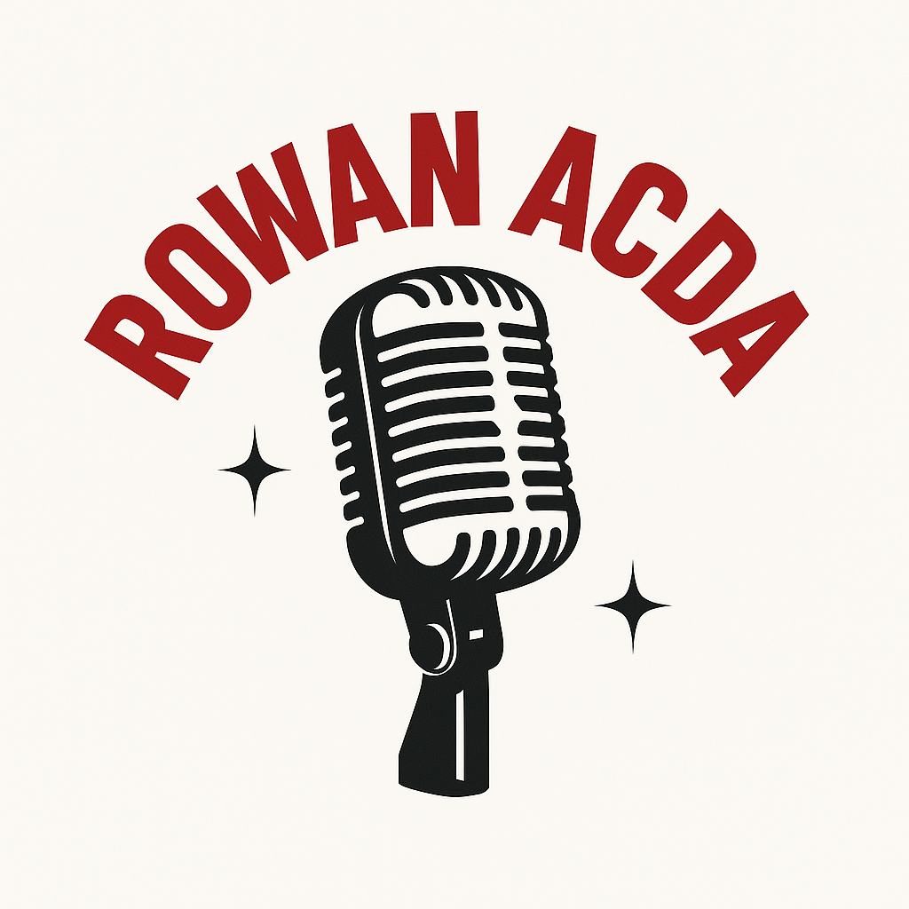

Welcome to Rowan ACDA
Concerts, workshops, and community for choral musicians at Rowan.

Workshops
Hands-on sessions—conducting, repertoire, classroom tech, and more.
Community
Meet peers, collaborate, and grow in an inclusive space.
Opportunities
Reading sessions, service projects, and conferences.